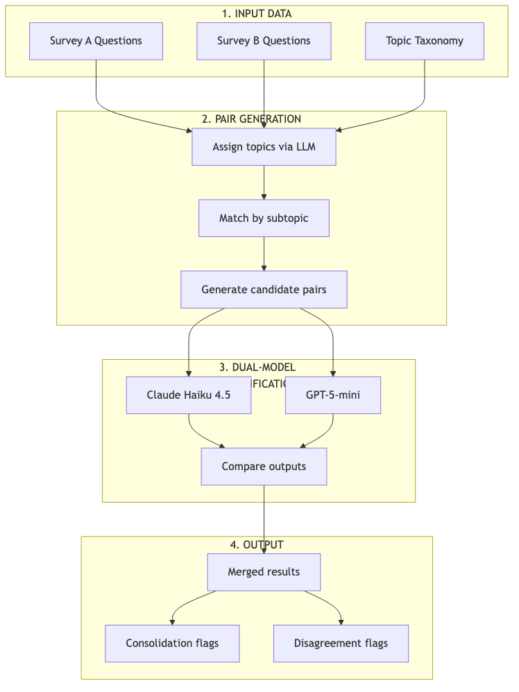
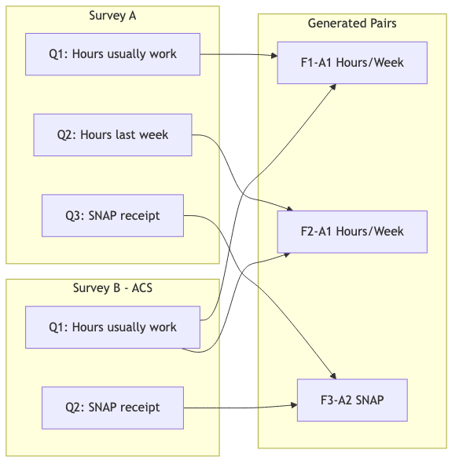
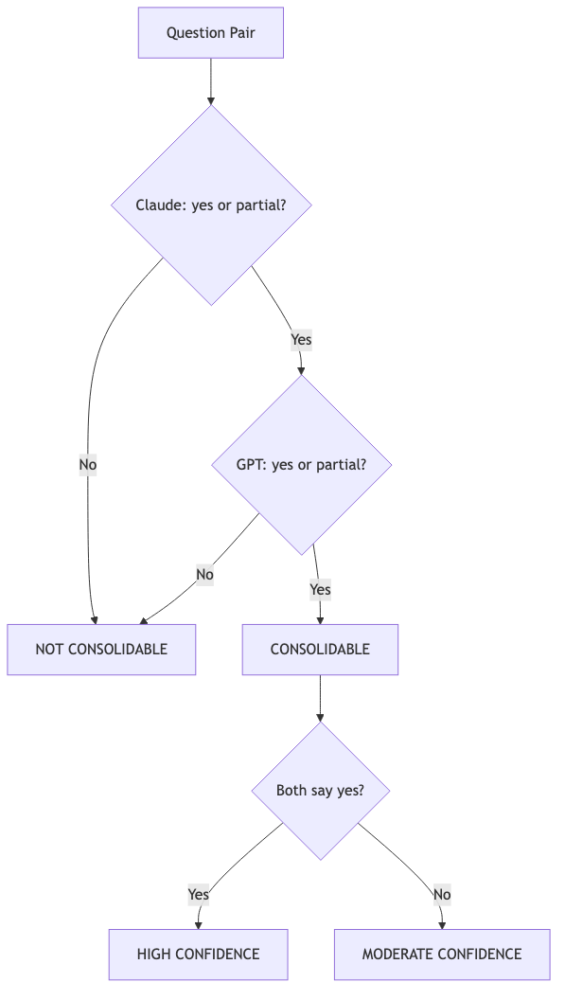

4 Classification Methodology
4.1 Workflow Overview
This methodology uses dual-LLM classification to assess whether question pairs from different surveys measure the same construct with compatible reference periods and response formats.

4.2 Stage 1: Input Data
4.2.1 Source Questions
Questions are extracted from official survey instruments:
| Survey | Source | Questions Extracted |
|---|---|---|
| FoodAPS | USDA FoodAPS questionnaire PDFs | 610 unique questions |
| CPS | Census Bureau CPS instrument | ~400 unique questions |
| ACS | Census Bureau ACS instrument | ~150 unique questions |
4.2.2 Topic Taxonomy
We use the Census Bureau’s official topic taxonomy with standardized categories:
Top-level topics: Demographics, Economics, Housing, Social
Subtopics (examples): - Demographics → Age, Sex, Race, Hispanic Origin, Citizenship - Economics → Employment Status, Hours/Week, Earnings, Unemployment - Social → Disability, Veterans, School Enrollment
4.3 Stage 2: Pair Generation
4.3.1 Topic Assignment
Each question is classified into the taxonomy using LLM:
INPUT: "How many hours do you usually work per week at your main job?"
OUTPUT: Topic: Economics
Subtopic: Hours/Week, Weeks/Year
Confidence: 0.954.3.2 Pair Matching Logic

Questions are paired within shared subtopics only: - Only questions with matching subtopics are paired - This is a many-to-many relationship within subtopics - Cross-subtopic pairs are not generated (reduces noise)
Example pair counts:
| Subtopic | FoodAPS Qs | ACS Qs | Pairs Generated |
|---|---|---|---|
| Hours/Week | 8 | 7 | 56 (8 × 7) |
| SNAP | 23 | 1 | 23 (23 × 1) |
| Disability | 2 | 6 | 12 (2 × 6) |
| Sex | 27 | 1 | 27 (27 × 1) |
4.4 Stage 3: Dual-Model Classification
4.4.1 Classification Schema
Each model assigns one of six classifications:
| Classification | Definition | Consolidation Potential |
|---|---|---|
exact_duplicate |
Identical wording, format, reference period | Yes |
near_duplicate |
Minor wording differences, same construct | Yes |
related_but_distinct |
Same topic, different specifics | No |
reference_period_mismatch |
Same construct, incompatible time windows | No |
response_format_mismatch |
Same construct, incompatible response types | No |
not_comparable |
Different constructs or topics | No |
4.4.2 Classification Prompt
Each question pair is sent to both models with identical prompts:
You are analyzing two survey questions to determine if they measure
the same construct and could potentially be consolidated through
record linkage.
QUESTION A (from {Survey A}):
"{question_a_text}"
QUESTION B (from {Survey B}):
"{question_b_text}"
Analyze these questions and provide:
1. CLASSIFICATION: Choose exactly one from the schema above
2. CONFIDENCE: high, medium, or low
3. REASONING: 2-3 sentences explaining your classification
4. CONSOLIDATION_POTENTIAL: yes, partial, or no
5. REFERENCE_PERIOD_A: Extract the time frame from Question A
6. REFERENCE_PERIOD_B: Extract the time frame from Question B
Respond in JSON format.4.4.3 Model Configuration
| Parameter | Claude Haiku 4.5 | GPT-5-mini |
|---|---|---|
| Temperature | 0.0 | 0.0 |
| Max tokens | 500 | 500 |
| Batch size | 10 questions | 10 questions |
| Parallel workers | 6 | 6 |
| Rate limiting | Exponential backoff | Exponential backoff |
Why two models? - Reduces single-model bias - Disagreements flag ambiguous cases - Agreement increases confidence - Different training data → different blind spots
4.5 Stage 4: Output and Analysis
4.5.1 Consolidation Determination

A pair is flagged as consolidable when:
Decision rules: - Both models say YES → High confidence, likely droppable - Both models say PARTIAL → Moderate confidence, partial overlap - One YES, one PARTIAL → Moderate confidence, needs review - Any NO → Not consolidable (conservative approach)
4.5.2 Disagreement Handling
| Disagreement Type | Action |
|---|---|
| Classification differs, consolidation same | Use consolidation consensus |
| Consolidation differs | Flag for human review |
| One high confidence, one low | Weight toward high confidence |
4.6 Classification Criteria
4.6.1 Exact Duplicate Criteria
All must be true: - Same core construct (what is being measured) - Same or equivalent wording - Same response format (binary, numeric, categorical) - Same reference period (or both unspecified) - Same unit of analysis (person, household)
4.6.2 Near Duplicate Criteria
Most must be true: - Same core construct - Similar but not identical wording - Compatible response format - Same or compatible reference period - Same unit of analysis
4.6.3 Reference Period Mismatch Criteria
- Same core construct
- Compatible wording
- Different reference periods that serve different purposes
4.6.4 Construct Mismatch (Not Comparable) Criteria
- Different constructs despite same topic domain
4.7 Quality Assurance
4.7.1 Automated Checks
| Check | Purpose | Action if Failed |
|---|---|---|
| JSON parse | Valid model output | Retry with backoff |
| Required fields | Complete response | Retry or flag |
| Enum validation | Valid classification | Reject and retry |
| Confidence present | Quality signal | Default to “medium” |
4.7.2 Checkpoint/Resume
Long runs use checkpoint files. If interrupted, processing resumes from last checkpoint.
4.8 Interpreting Results
4.8.1 Consolidation Rate Calculation
Consolidation Rate = (Pairs where BOTH models say yes/partial) / Total Pairs4.8.2 What “Consolidable” Means
It means: If you had perfect person-linkage between surveys, this question could potentially be dropped from Survey A because Survey B already collects equivalent data.
It does NOT mean: - The questions are identical - Linkage is feasible - Data quality would be equivalent - Skip logic permits removal
4.8.3 Model Agreement Interpretation
| Agreement Rate | Interpretation |
|---|---|
| >90% | Clear cases, high confidence in results |
| 70-90% | Normal range, some genuine ambiguity |
| <70% | Many borderline cases, interpret cautiously |
4.9 Reproducibility
4.9.1 Parameters
MODELS = ["claude-haiku-4.5", "gpt-5-mini"]
TEMPERATURE = 0.0
MAX_TOKENS = 500
BATCH_SIZE = 10
PARALLEL_WORKERS = 6
REQUIRE_BOTH_MODELS = True
CONSOLIDATION_VALUES = ["yes", "partial"]4.9.2 Cost Tracking
| Survey Pair | Pairs | Total Cost |
|---|---|---|
| FoodAPS-ACS | 610 | ~$0.50 |
| CPS-ACS | 1,092 | ~$1.00 |
| Total | 1,702 | ~$1.50 |
4.10 Limitations
4.10.1 What LLMs Can’t Assess
- Skip logic dependencies - Whether removing a question breaks survey flow
- Analytical continuity - Impact on time series if source changes
- Response quality - Whether linked data has same error properties
- Linkage feasibility - Whether person-matching is actually possible
4.10.2 When Human Review Is Required
- Model disagreement on consolidation potential
- High-stakes consolidation decisions
- Unusual or domain-specific constructs
- Questions with complex skip logic